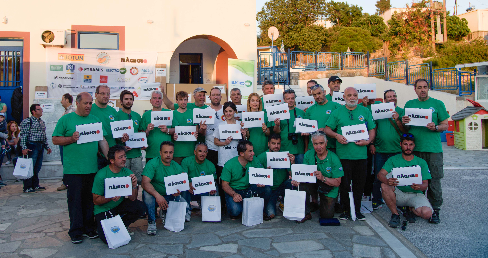
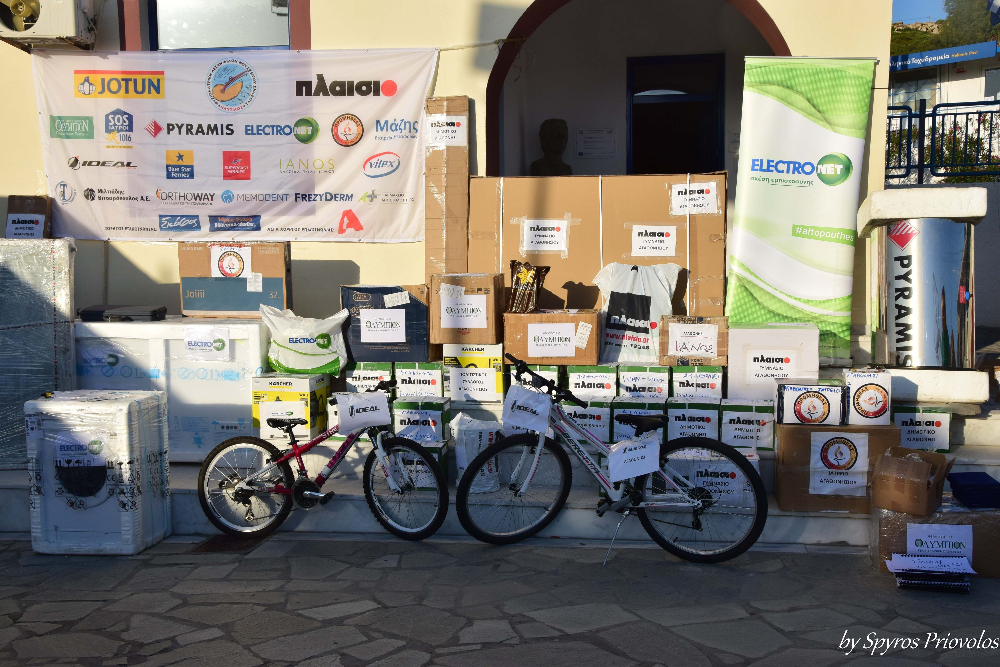
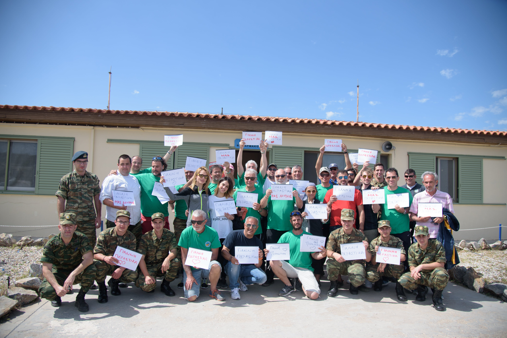
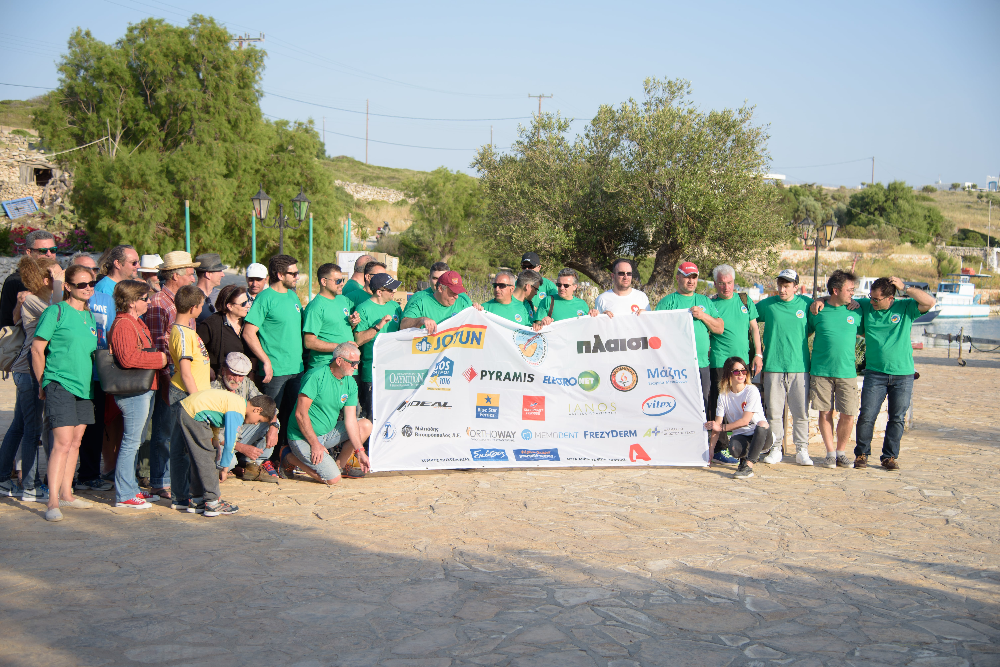

2017-2018
Προσφορά φαρμάκων, τεχνολογικού εξοπλισμού & γραφικής ύλης
Η ομάδα εθελοντών «Πλάι σου» συμμετέχει ενεργά στις αποστολές του Ναυτίλου, «Σταγόνα Αγάπης» στο Αιγαίο. Ειδικότερα, τον Μάιο του 2017, μία αποστολή 7 σκαφών ξεκίνησε από την Ανάβυσσο κα το Λαύριο, με τελικό προορισμό τα νησιά της άγονης γραμμής: Αρκιοί, Φαρμακονήσι & Αγαθονήσι. Σκοπός τους ήταν η προσφορά φαρμάκων, τεχνολογικού εξοπλισμού και γραφικής ύλης για την κάλυψη των αναγκών των αγροτικών ιατρείων, των σχολείων και των λιμενικών σταθμών.


Παράλληλα, η προσφορά συνεχίστηκε και το 2018, αυτή τη φορά στη
Δονούσα, όπου η ομάδα προέβη σε:
- Δωρεά ηλεκτρονικού εξοπλισμού & αναλωσίμων στα σχολεία και άλλες δομές του νησιού
- Εθελοντική υποστήριξη & εργασία ώστε να εγκατασταθούν προσωρινά ιατρεία στο νησί με γιατρούς από 11 ειδικότητες, παρέχοντας check-ups, ιατρικές διαγνώσεις & χρήσιμες συμβουλές.
- Διοργάνωση δραστηριοτήτων για τα παιδιά και ομίλων παιχνιδιού στο Πνευματικό Κέντρο της Δονούσας, με επιτραπέζια και παιχνίδια STEM.
- Διοργάνωση βραδιάς παιδικού κινηματογράφου

